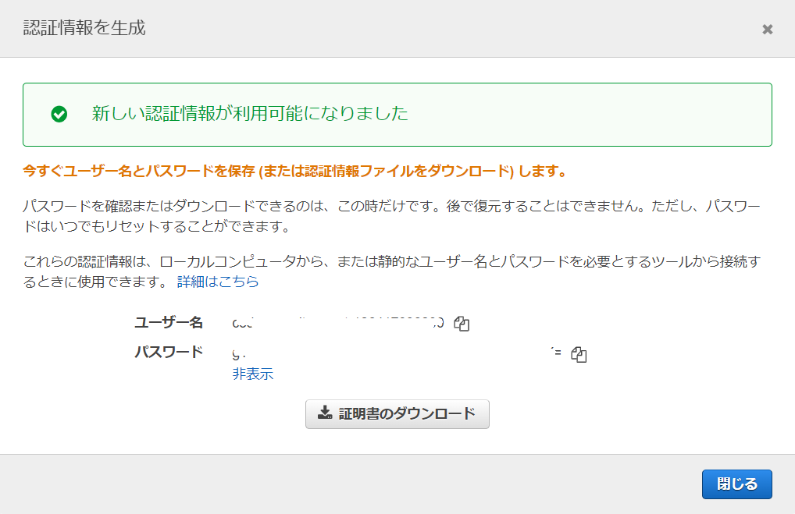
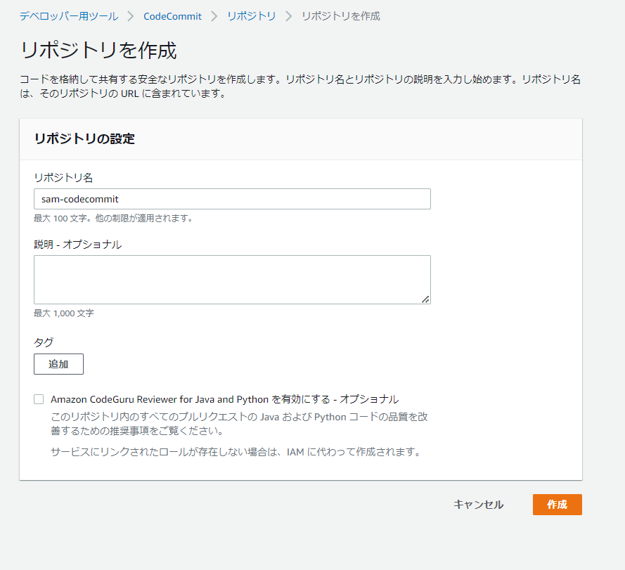
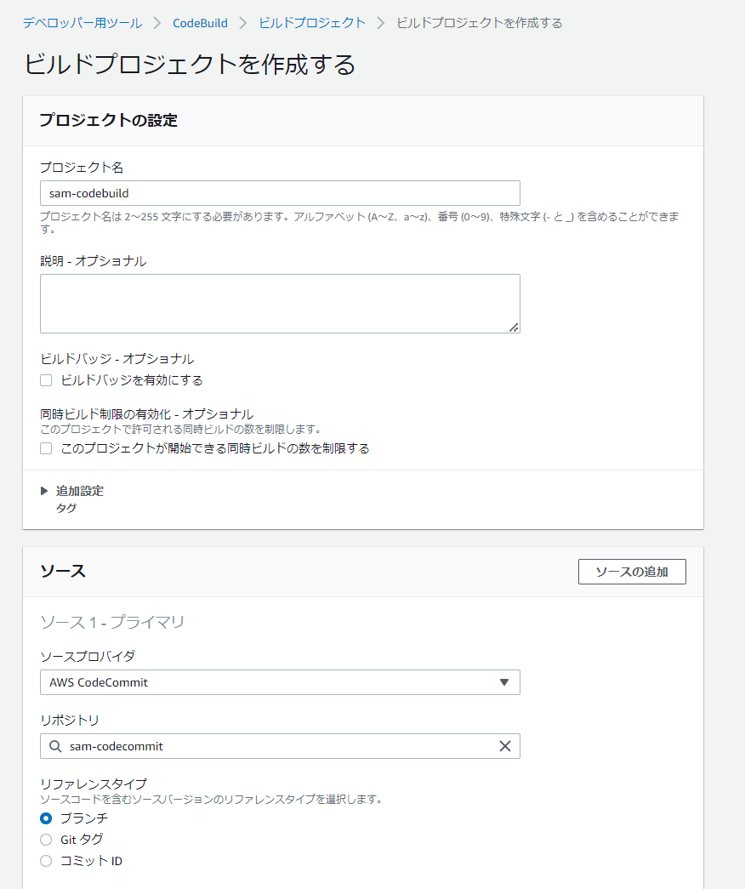
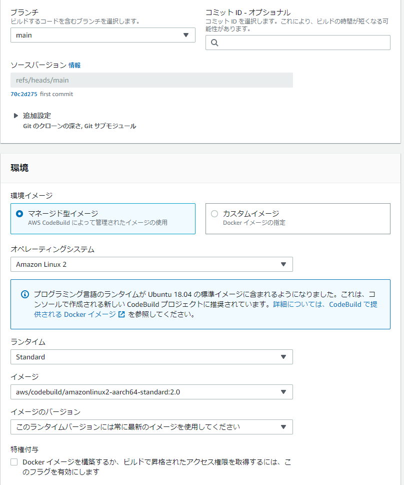
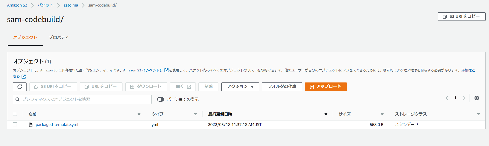
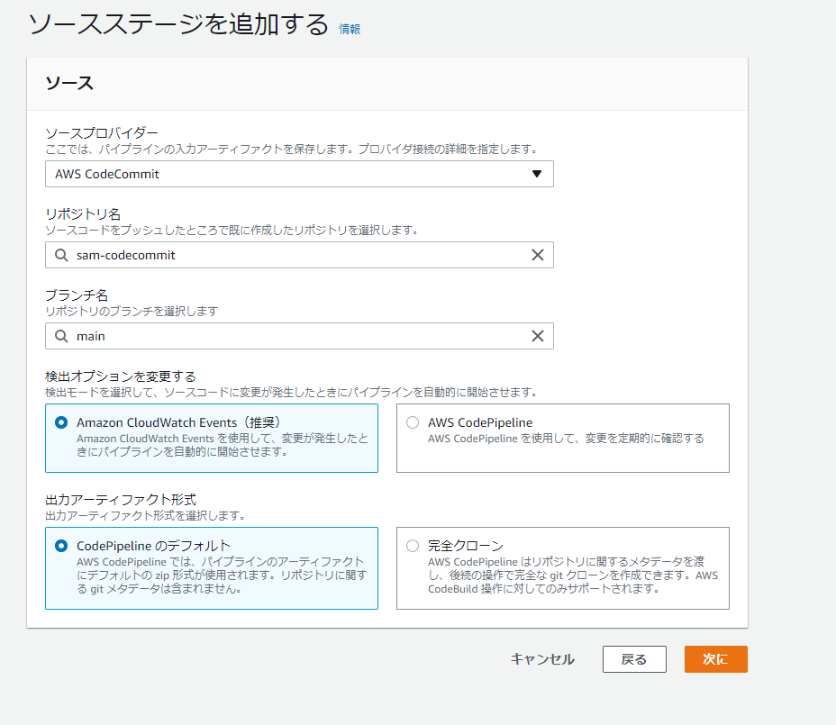
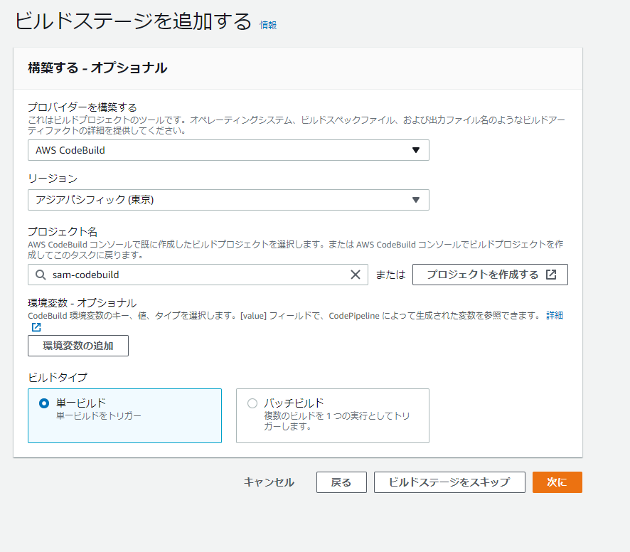
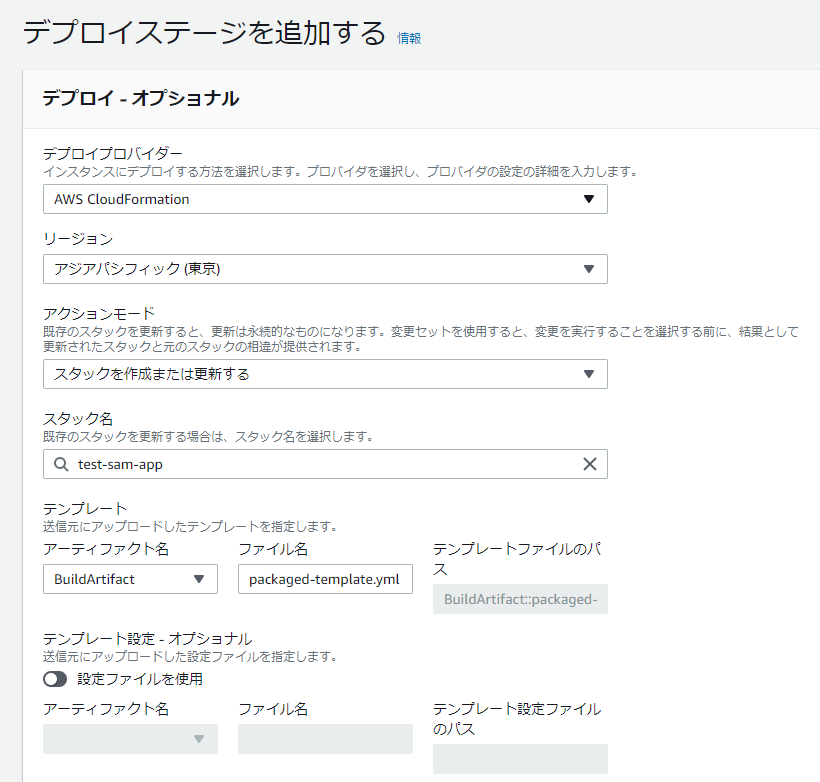

SAMを使用したLambdaのデプロイをCodePipelineに組み込む
前提条件
- SAM CLIがインストールされていること
- CodeCommit用のユーザが事前作成されていること
- AWSCodeCommitPowerUserを付与する
- AWS CodeCommit の HTTPS Git 認証情報を控えておく。（IAMの認証情報から生成）
SAM用のディレクトリ/デプロイ用のファイル準備
[ec2-user@bastin test-sam]$ tree
.
├── function
│ ├── function.py
│ └── requirements.txt
├── samconfig.toml
└── template.yaml
1 directory, 4 files
[ec2-user@bastin test-sam]$ cat function/function.py
import json
import requests
def lambda_handler(event, context):
print(requests.get('https://google.com'))
return {
'statusCode': 200,
'body': json.dumps('Hello from Lambda!')
}
[ec2-user@bastin test-sam]$
[ec2-user@bastin test-sam]$ cat function/requirements.txt
requests
[ec2-user@bastin test-sam]$
[ec2-user@bastin test-sam]$ cat samconfig.toml
version = 0.1
[default]
[default.deploy]
[default.deploy.parameters]
stack_name = "test-sam-app"
s3_bucket = "zatoima"
s3_prefix = "test-sam-app"
region = "ap-northeast-1"
capabilities = "CAPABILITY_IAM"
[ec2-user@bastin test-sam]$
[ec2-user@bastin test-sam]$ cat template.yaml
AWSTemplateFormatVersion: '2010-09-09'
Transform: AWS::Serverless-2016-10-31
Description: SAM Template for test-sam-app
Globals:
Function:
Timeout: 3
Resources:
Function:
Type: AWS::Serverless::Function
Properties:
FunctionName: test-sam-app
CodeUri: function/
Handler: function.lambda_handler
Runtime: python3.8
Outputs:
Function:
Description: "test-sam-app Lambda Function ARN"
Value: !GetAtt Function.Arn
FunctionIamRole:
Description: "Implicit IAM Role created for test-sam-app function"
Value: !GetAtt FunctionRole.Arn
buildspec.yamlの準備
sam packageでパッケージングするBuildspec.yamlを準備
version: 0.2
phases:
install:
runtime-versions:
python: 3.8
build:
commands:
- sam package --template-file template.yaml --s3-bucket zatoima --output-template-file packaged-template.yml
artifacts:
files:
- packaged-template.yml
CodeCommitの設定


リポジトリをクローンする
git clone https://git-codecommit.ap-northeast-1.amazonaws.com/v1/repos/sam-codecommit
[ec2-user@bastin ~]$ git clone https://git-codecommit.ap-northeast-1.amazonaws.com/v1/repos/sam-codecommit
Cloning into 'sam-codecommit'...
Username for 'https://git-codecommit.ap-northeast-1.amazonaws.com': codecommituser-at-xxxxxxxxxxxxx
Password for 'https://codecommituser-at-xxxxxxxxxxxxx@git-codecommit.ap-northeast-1.amazonaws.com':
remote: Counting objects: 3, done.
Unpacking objects: 100% (3/3), 349 bytes | 349.00 KiB/s, done.
[ec2-user@bastin ~]$
SAMのデプロイ用のファイルをリポジトリにPushする。
[ec2-user@bastin sam-codecommit]$ git push
Username for 'https://git-codecommit.ap-northeast-1.amazonaws.com': codecommituser-at-xxxxxxxxxxxxx
Password for 'https://codecommituser-at-xxxxxxxxxxxxx@git-codecommit.ap-northeast-1.amazonaws.com':
Enumerating objects: 8, done.
Counting objects: 100% (8/8), done.
Delta compression using up to 2 threads
Compressing objects: 100% (6/6), done.
Writing objects: 100% (7/7), 1.05 KiB | 1.05 MiB/s, done.
Total 7 (delta 0), reused 0 (delta 0), pack-reused 0
To https://git-codecommit.ap-northeast-1.amazonaws.com/v1/repos/sam-codecommit
aed7fe9..70c2d27 main -> main
[ec2-user@bastin sam-codecommit]$
こんな感じの状態になる。
CodeBuild



成功後にpackaged-template.ymlがS3に生成

CodePipelineの設定
CodeCommit->CodeBuild->CloudFormation




アクションモードにいくつか種類があるので適切なものを選ぶ

パイプラインの実行
コードを1行だけ追加。print("test")
[ec2-user@bastin function]$ cat function.py
import json
import requests
def lambda_handler(event, context):
print("test")
print(requests.get('https://google.com'))
return {
'statusCode': 200,
'body': json.dumps('Hello from Lambda!')
}
codecommitへpush
cd /home/ec2-user/sam-codecommit
git add .
git commit -m "Update commit"
git push

CloudFormation
Lambda

参考
関連しているかもしれない記事
- API Gateway+LambdaのSAMでCanaryデプロイを実施
- S3へのファイルのPUTを検知してLamdbaからAurora PostgreSQLのテーブルへCSV形式のデータをロード
- AWS SAM CLI を使用したLambdaのデプロイ
- Lambdaからawslambda-psycopg2を使用してAurora PostgreSQLに接続
- pgAdmin4からAurora PostgreSQLへ踏み台サーバのポートフォワード経由で接続する